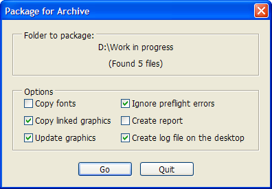
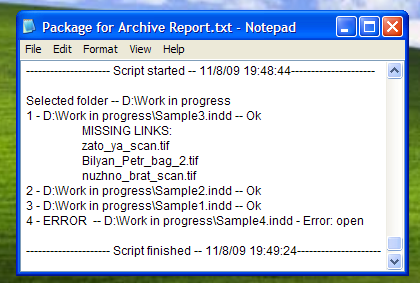

Package for Archive
Script for InDesign CS3-6 version 5.0.
Recently I read an article by David Blatner on indesignsecrets.com, in which he offered that somebody would write a script packaging multiple documents quickly. I wrote such a script long ago and use it for collecting publications and their related files for further archiving to DVD disks. It was written in AppleScript, so it can be used only on Mac. After reading the article, I decided to translate it to JavaScript so that Windows users could use it as well.
How it works:
After you run the script, a dialog box appears asking you to choose a folder containing the InDesign files you want to package.
Then another dialog pops up offering you to select packaging options, at the top of which you can see the path to the selected folder and the number of found files.

After you press Go button the script creates in the selected folder two subfolders: Archive and Backup, if they don't already exist, and opens each InDesign file one by one, creates a package in the Archive folder, closes the file without saving and finally moves it to the Backup folder. To improve the performance, the script doesn't show publications being opened and closed. But you can see the progress bar and the name of the current file, its sequential number and total quantity of files in the folder.
If you choose Ignore preflight errors option in the dialog, the script ignores all the warnings while batch processing the files — that is, if a document contains missing fonts, modified or missing links, missing fonts and links will be just ignored and modified links will be updated automatically. This is very useful option for my workflow, since we delete all advertisement images before packaging publications.
Another important option is Create log file on the desktop. If you choose it, the script will create a file on the Desktop called Package for Archive Report.txt, and will write every file's path, the list of its missing links if it has any, and any error that may occur during the process. For example, on the screenshot (see below) you can see that Sample4.indd file failed to open — this happened because it was saved in CS4, but the script was run from CS3.

Click here to download the script.
If, for some reason, version 4.0 doesn’t work for you, try to use this simplified version — 4.1. It works the same way, but doesn’t keep some file attributes: creation and modification dates, labels (on Mac), etc.